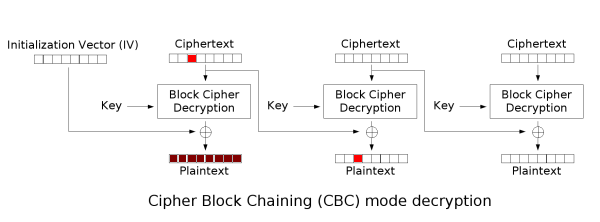

# 分组密码 CBC 模式
对于一般的分组密码来说，简单的 ECB 模式实际中是不应该使用的，因为它对于 Many-Time Key 的情景来说并不是语义安全的。
对于有大量的明文需要加密的情况，CBC 模式是一种可行的选择，CBC 模式即密文块链接（Cipher Block Chaining）模式。
在 CBC 模式中，每一个密文块都是由这一块对应的明文和上一块密文块异或之后经过加密得到，而第一块密文是一个随机的初始向量 IV 和第一块明文异或之后经过加密得到。如图所示：

利用符号来表述即：明文，初始向量，分组密码加密函数为，解密函数为，CBC 模式密文为：
那么这样子也很容易就能够推算出解密的过程：

同样的，我们能够给出解密的表述：
以上是 CBC 模式的整个过程。在实际使用中，因为需要加密的明文长度并不一定是分组密码块长度的倍数，所以说我们也需要引入 padding 函数来填充明文使得明文长度是分组密码块长度的整数倍，常用的如 PKCS #7 标准中的填充方法，在之前 ECB many time a key 攻击中也讲了。
我们可以通过直接对 ECB 模式进行调用来实现 CBC 模式：
def AES_encrypt_CBC(plain_text: bytes, key: bytes, iv: bytes) -> str: | |
# using ECB mode to implement CBC mode | |
block_size = AES.block_size | |
if len(plain_text) % block_size != 0: | |
plain_text = padding(plain_text, block_size) | |
cipher_text = b"" | |
for i in range(0, len(plain_text) // block_size): | |
iv = AES_encrypt_ECB(bytes_xor(plain_text[i * block_size:(i + 1) * block_size], iv), key) | |
cipher_text += iv | |
return base64.b64encode(cipher_text).decode() | |
def AES_decrypt_CBC(cipher_text: str, key: bytes, iv: bytes) -> Union[str, bytes]: | |
# using ECB mode to implement CBC mode | |
block_size = AES.block_size | |
ct = base64.b64decode(cipher_text.encode()) | |
plain_text = b"" | |
assert len(ct) % block_size == 0, "Invalid Cipher text?" + str(len(ct)) | |
iv = add_iv_to_64bit(iv) | |
for i in range(0, len(ct) // block_size): | |
plain_text += bytes_xor(AES_decrypt_ECB(ct[i * block_size : i * block_size + block_size], key), iv) | |
iv = ct[i * block_size : i * block_size + block_size] | |
return unpadding(plain_text) |
# CBC Padding Oracle Attack
CBC 模式存在的一个问题是，它并没有办法去提供消息完整性。也就是，我们不能把区分出一条消息是正常的消息还是被攻击者精心构造的消息。这里先来看一下 CBC bitflipping attack.
# CBC bitflipping attack
回到之前的内容，CBC 模式的每一块密文都是当前这一块明文和上一块密文异或之后加密的结果，解密则是将当前块解密之后与上一块密文异或。
这样子，我们就能够通过修改一块密文某一位来影响下一块密文的某一位：

那么，在已经知道一块密文 对应的明文 的情况下，如果我们将前一块密文 异或上一个数，那么密文 解密之后的结果就是.
这是一个很坏的事情，如果我们知道了密文 对应的明文，那我们就能够任意修改解密之后的结果。假设 Alice 向 Bob 发送一条信息= plz give me $100 ，通过一个随机的 进行 CBC 加密，得到。那么一个攻击者就可以构造= plz give me $500 ，篡改。
这样子，解密之后的结果就是：，也就是说，Bob 会收到一条消息 plz give me $500 。
# padding oracle attack
前面说了 CBC bitflipping attack，而 Padding Oracle Attack 的一些思路和它是类似的。如果我们知道明文的某一个字节，那我们就可以通过 bitflipping 来任意修改密文解密之后的任何一个字节。
在 PKCS #7 中，如果密文的 padding 是无效的，那么解密器会抛出一个 Padding Invalid 异常。这样，我们就可以猜测明文的某一个字节，然后将它通过 bitflipping 修改为 padding，如果我们猜对了，那么这一个字节就会变成对应的 padding，解密器解密，一切正常；如果我们猜错了，那么后面的 padding 必定是无效的，解密器抛出 padding invalid 异常。通过解密器是否抛出异常，我们能够猜测出明文中的某一个字节。
举一个具体的例子：
# CBC padding oracle attack | |
+----------+-------------------------------------------------+------------------+ | |
|IV | 00 01 02 03 04 05 06 07 08 09 0a 0b 0c 0d 0e 0f | ................ | | |
|plaintext | 70 61 73 73 77 6f 72 64 3a 31 31 34 35 31 34 01 | password:114514. | | |
+----------+-------------------------------------------------+------------------+ | |
+----------+-------------------------------------------------+------------------+ | |
|IV | 00 01 02 03 04 05 06 07 08 09 0a 0b 0c 0d 0e 0f | ................ | | |
|ciphertext| 56 dc e1 3d 48 5b 5a 07 47 47 e3 b7 10 e1 3f 97 | V..=H[Z.GG....?. | | |
+----------+-------------------------------------------------+------------------+ |
我们首先猜测密文最后一字节的内容，因为目标是最后一个字节，我们就将其变成 padding 的 0x01。那么，我们开始猜测：
IV[15] = 0x00 | |
+----------+-------------------------------------------------+ | |
|IV | 00 01 02 03 04 05 06 07 08 09 0a 0b 0c 0d 0e 0f | | |
|ciphertext| 56 dc e1 3d 48 5b 5a 07 47 47 e3 b7 10 e1 3f 97 | | |
+----------+-------------------------------------------------+ | |
^ to be edited | |
0x0f^0x00^0x01=0x0e | |
v here edited | |
+----------+-------------------------------------------------+ | |
|IV | 00 01 02 03 04 05 06 07 08 09 0a 0b 0c 0d 0e 0e | | |
|ciphertext| 56 dc e1 3d 48 5b 5a 07 47 47 e3 b7 10 e1 3f 97 | | |
+----------+-------------------------------------------------+ | |
====> Invalid Padding! | |
IV[15] = 0x01 | |
+----------+-------------------------------------------------+ | |
|IV | 00 01 02 03 04 05 06 07 08 09 0a 0b 0c 0d 0e 0f | | |
|ciphertext| 56 dc e1 3d 48 5b 5a 07 47 47 e3 b7 10 e1 3f 97 | | |
+----------+-------------------------------------------------+ | |
^ to be edited | |
0x0f^0x01^0x01=0x0f | |
v here edited | |
+----------+-------------------------------------------------+ | |
|IV | 00 01 02 03 04 05 06 07 08 09 0a 0b 0c 0d 0e 0f | | |
|ciphertext| 56 dc e1 3d 48 5b 5a 07 47 47 e3 b7 10 e1 3f 97 | | |
+----------+-------------------------------------------------+ | |
====> Correct Padding! |
可见，如果猜测结果正确，解密器不会抛出 Invalid Padding 异常。这样我们就已经知道了明文最后一个字节为 0x01（实际上是原本的 padding）。
接下来，我们猜测倒数第二个字节：
IV[14] = 0x00 | |
+----------+-------------------------------------------------+ | |
|IV | 00 01 02 03 04 05 06 07 08 09 0a 0b 0c 0d 0e 0f | | |
|ciphertext| 56 dc e1 3d 48 5b 5a 07 47 47 e3 b7 10 e1 3f 97 | | |
+----------+-------------------------------------------------+ | |
^ ^ to be edited | |
0x0e^0x00^0x02=0x0c | |
0x0f^0x00^0x02=0x0d | |
v v here edited | |
+----------+-------------------------------------------------+ | |
|IV | 00 01 02 03 04 05 06 07 08 09 0a 0b 0c 0d 0c 0d | | |
|ciphertext| 56 dc e1 3d 48 5b 5a 07 47 47 e3 b7 10 e1 3f 97 | | |
+----------+-------------------------------------------------+ | |
====> Invalid Padding! | |
IV[14] = 0x01 | |
+----------+-------------------------------------------------+ | |
|IV | 00 01 02 03 04 05 06 07 08 09 0a 0b 0c 0d 0e 0f | | |
|ciphertext| 56 dc e1 3d 48 5b 5a 07 47 47 e3 b7 10 e1 3f 97 | | |
+----------+-------------------------------------------------+ | |
^ ^ to be edited | |
0x0e^0x01^0x02=0x0d | |
0x0f^0x01^0x02=0x0c | |
v v here edited | |
+----------+-------------------------------------------------+ | |
|IV | 00 01 02 03 04 05 06 07 08 09 0a 0b 0c 0d 0d 0c | | |
|ciphertext| 56 dc e1 3d 48 5b 5a 07 47 47 e3 b7 10 e1 3f 97 | | |
+----------+-------------------------------------------------+ | |
====> Invalid Padding! | |
...... | |
IV[14] = 0x34 | |
+----------+-------------------------------------------------+ | |
|IV | 00 01 02 03 04 05 06 07 08 09 0a 0b 0c 0d 0e 0f | | |
|ciphertext| 56 dc e1 3d 48 5b 5a 07 47 47 e3 b7 10 e1 3f 97 | | |
+----------+-------------------------------------------------+ | |
^ ^ to be edited | |
0x0e^0x34^0x02=0x0c | |
0x0f^0x34^0x02=0x0d | |
v v here edited | |
+----------+-------------------------------------------------+ | |
|IV | 00 01 02 03 04 05 06 07 08 09 0a 0b 0c 0d 38 09 | | |
|ciphertext| 56 dc e1 3d 48 5b 5a 07 47 47 e3 b7 10 e1 3f 97 | | |
+----------+-------------------------------------------------+ | |
====> Correct Padding! |
因此，我们能够确定明文最后两个字节为 0x34，0x01。以此类推，我们能够得到整个明文的内容。
# 代码
这里给一个简单的演示作为例子。
from Crypto.Cipher import AES | |
from Crypto.Util.number import long_to_bytes, bytes_to_long | |
plain_text = b"password:114514\x01" | |
iv = b"0123456789abcdef" | |
key = b"ffffffffffffffff" | |
cipher = AES.new(key=key, mode=AES.MODE_CBC, iv=iv).encrypt(plain_text) | |
def padding_validation(text: bytes): | |
padding_size = text[-1] | |
assert padding_size <= 16, "Invalid Padding" | |
for i in range(padding_size): | |
assert text[len(text) - i - 1] == padding_size, "Invalid Padding" | |
def decrypt(c): | |
iv = c[0:16] | |
cipher = c[16:] | |
a = AES.new(key=key, mode=AES.MODE_CBC, iv=iv).decrypt(cipher) | |
try: | |
padding_validation(a) | |
except: | |
return 0 | |
return 1 | |
def bytes_xor(a, b): | |
a = bytes_to_long(a) | |
b = bytes_to_long(b) | |
return int(a ^ b).to_bytes(length=16, byteorder="big") | |
def padding_oracle(cipher, iv): | |
m = b"" | |
for i in range(15, -1, -1): | |
print(f"in pos { i }") | |
ans = 0 | |
pad = 16 - i | |
padding = b"" | |
for j in range(16 - pad): | |
padding += b"\x00" | |
for j in range(pad): | |
padding += pad.to_bytes(length=1, byteorder="big") | |
for x in range(256): | |
temp_m = x.to_bytes(length=1, byteorder="big") + m | |
msg = bytes_xor(bytes_xor(temp_m, iv), padding) + cipher | |
if decrypt(msg) == 1: | |
ans = x | |
print(b" add " + x.to_bytes(length=1, byteorder="big")) | |
m = ans.to_bytes(length=1, byteorder="big") + m | |
print(m) | |
padding_oracle(cipher, iv) |
# 总结一下？
可以看到 Padding Oracle Attack 实际上应该是一种选择密文攻击（CCA），对于一块 16 字节长度的密文，只需要 16*256 次计算就能够得到明文，这明显可以对一个系统进行有效的攻击。
也就是说，简单的 CBC 模式并不是 CCA 安全的，而分组密码的 CTR 模式并不会受到这种攻击的影响，相对来说也是更加安全。
另外一种思路是采用认证加密（Authentication Encryption, AE），对密文提供完整性，防止攻击者进行选择密文攻击。但是这样就会面临区分 MAC Error 和 Padding Error，以及基于时间的侧信道攻击等问题了。